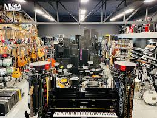

en cuenta diversos factores como el costo de adquisición de los instrumentos, la marca,
la calidad del producto y la demanda del mercado. Los instrumentos musicales pueden
tener precios muy variables dependiendo de su tipo y nivel de calidad.
la selección del inventario. Los encargados del negocio deben decidir
qué instrumentos vender según la demanda del público. Si hay mayor
interés por guitarras, teclados o baterías, el negocio puede aumentar el
número de estos productos en el inventario.
comerciales son elementos fundamentales para el éxito del negocio. A través de un
análisis del mercado, una correcta fijación de precios y una adecuada selección de
productos, el negocio puede mantenerse competitivo, satisfacer a sus clientes y
contribuir al desarrollo de la música dentro de su comunidad.